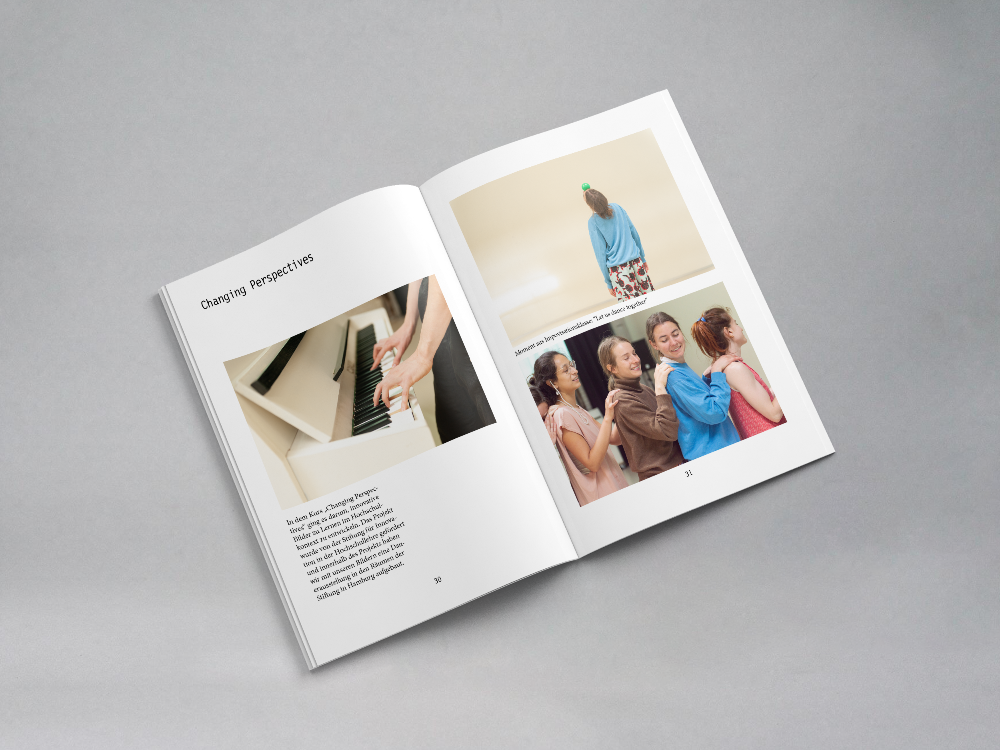
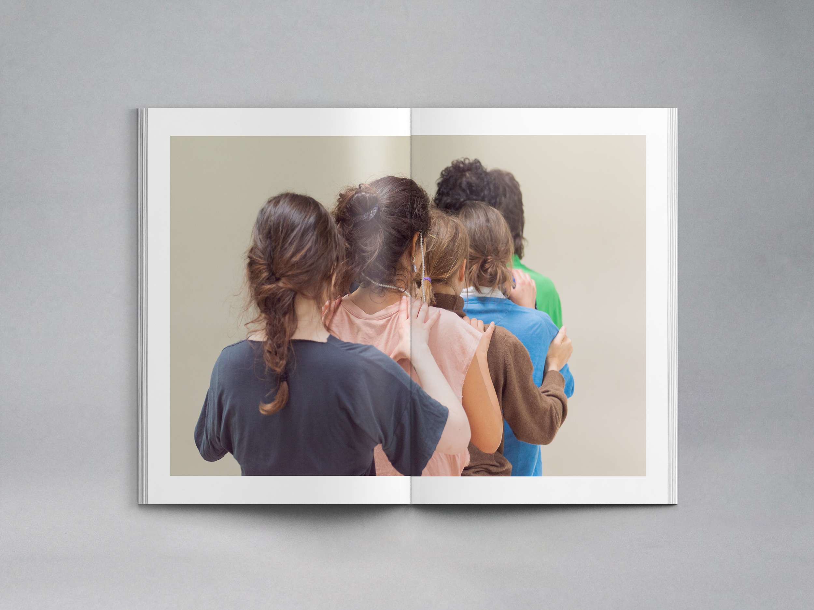
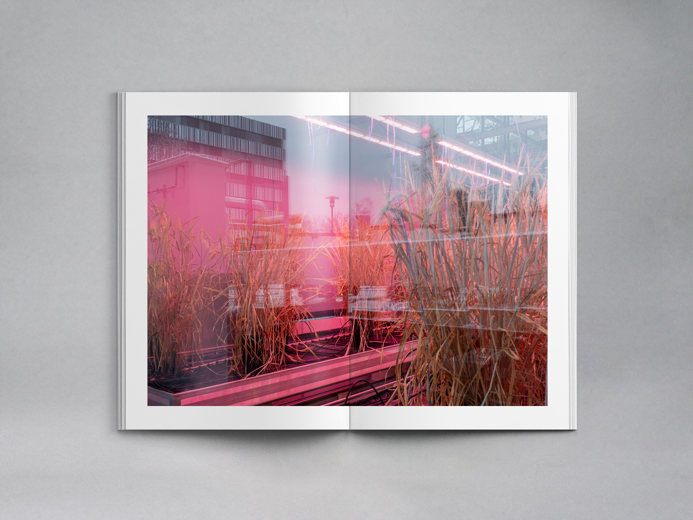

This work was completed as part of the interdisciplinary colloquium module.
The projects from the past semesters were documented in analog form, and a personal reflection was made. The publication combines editorial design and photography to create a visual documentation of the different projects and experiences.


